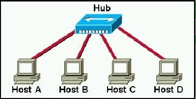
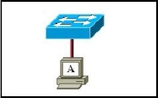
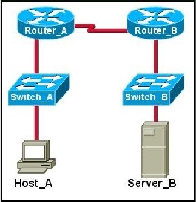

Chapter 9 – CCNA 1
01.  In the graphic, Host A has reached 50% completion in sending a 1 KB Ethernet frame to Host D when Host B wishes to transmit its own frame to Host C. What must Host B do?
{kind=link}
- Host B can transmit immediately since it is connected on its own cable segment;
- Host B must wait to receive a CSMA transmission from the hub, to signal its turn;
- Host B must send a request signal to Host A by transmitting an interframe gap;
- Host B must wait until it is certain that Host A has completed sending its frame.
02. Ethernet operates at which layers of the OSI model? (Choose two.)
- Network layer;
- Transport layer;
- Physical layer;
- Application layer;
- Session layer;
- Data-link layer.
03. Which of the following describe interframe spacing? (Choose two.)
- the minimum interval, measured in bit-times, that any station must wait before sending another frame;
- the maximum interval, measured in bit-times, that any station must wait before sending another frame;
- the 96-bit payload padding inserted into a frame to achieve a legal frame size;
- the 96-bit frame padding transmitted between frames to achieve proper synchronization;
- the time allowed for slow stations to process a frame and prepare for the next frame.
- the maximum interval within which a station must send another frame to avoid being considered unreachable
04. What three primary functions does data link layer encapsulation provide? (Choose three.)
- addressing;
- error detection;
- frame delimiting;
- port identification;
- path determination;
- IP address resolution.
05. When a collision occurs in a network using CSMA/CD, how do hosts with data to transmit respond after the backoff period has expired?
- The hosts return to a listen-before-transmit mode;
- The hosts creating the collision have priority to send data;
- The hosts creating the collision retransmit the last 16 frames;
- The hosts extend their delay period to allow for rapid transmission.
06. What are three functions of the upper data link sublayer in the OSI model? (Choose three.)
- recognizes streams of bits;
- identifies the network layer protocol;
- makes the connection with the upper layers;
- identifies the source and destination applications;
- insulates network layer protocols from changes in physical equipment;
- determines the source of a transmission when multiple devices are transmitting.
07. What does the IEEE 802.2 standard represent in Ethernet technologies?
- MAC sublayer;
- Physical layer;
- Logical Link Control sublayer;
- Control sublayer;
- Network layer.
08. Why do hosts on an Ethernet segment that experience a collision use a random delay before attempting to transmit a frame?
- A random delay is used to ensure a collision-free link;
- A random delay value for each device is assigned by the manufacturer;
- A standard delay value could not be agreed upon among networking device vendors;
- A random delay helps prevent the stations from experiencing another collision during the transmission;
09. Refer to the exhibit. Which option correctly matches the frame field type with the contents that frame field includes?
{kind=link}
- header field – preamble and stop frame;
- data field – network layer packet;
- data field – physical addressing;
- trailer field – FCS and SoF.
10. Host A has an IP address of 172.16.225.93 and a mask of 255.255.248.0. Host A needs to communicate with a new host whose IP is 172.16.231.78. Host A performs the ANDing operation on the destination address. What two things will occur? (Choose two.)
- Host A will change the destination IP to the IP of the nearest router and forward the packet;
- Host A will broadcast an ARP request for the MAC of its default gateway;
- A result of 172.16.225.0 will be obtained;
- Host A will broadcast an ARP request for the MAC of the host 172.16.231.78;
- A result of 172.16.224.0 will be obtained;
- A result of 172.16.225.255 will be obtained. (Host A wiil send on to the media a bradcast frame that contains packet).
11. Which of the following is a drawback of the CSMA/CD access method?
- Collisions can decrease network performance.
- It is more complex than non-deterministic protocols.
- Deterministic media access protocols slow network performance.
- CSMA/CD LAN technologies are only available at slower speeds than other LAN technologies.
12. Ethernet operates at which layer of the TCP/IP network model?
- application;
- physical;
- transport;
- internet;
- data link;
- network access.
13. What is the primary purpose of ARP?
- translate URLs to IP addresses ;
- resolve IPv4 addresses to MAC addresses ;
- provide dynamic IP configuration to network devices ;
- convert internal private addresses to external public addresses .
14.  Refer to the exhibit. The switch and workstation are administratively configured for full-duplex operation. Which statement accurately reflects the operation of this link?
{kind=link}
- No collisions will occur on this link.
- Only one of the devices can transmit at a time.
- The switch will have priority for transmitting data.
- The devices will default back to half duplex if excessive collisions occur.
15. Refer to the exhibit. Host_A is attempting to contact Server_B. Which statements correctly describe the addressing Host_A will generate in the process? (Choose two.)
{kind=link}
- A packet with the destination IP of Router_B.
- A frame with the destination MAC address of Switch_A.
- A packet with the destination IP of Router_A.
- A frame with the destination MAC address of Router_A.
- A packet with the destination IP of Server_B.
- A frame with the destination MAC address of Server_B.
16. Which statements correctly describe MAC addresses? (Choose three.)
- dynamically assigned;
- copied into RAM during system startup;
- layer 3 address;
- contains a 3 byte OUI;
- 6 bytes long;
- 32 bits long.
17. Which two features make switches preferable to hubs in Ethernet-based networks? (Choose two.)
- reduction in cross-talk;
- minimizing of collisions ;
- support for UTP cabling ;
- division into broadcast domains ;
- increase in the throughput of communications .
18. What are the two most commonly used media types in Ethernet networks today? (Choose two.)
- coaxial thicknet;
- copper UTP;
- coaxial thinnet;
- optical fiber;
- shielded twisted pair.
19. Convert the binary number 10111010 into its hexadecimal equivalent. Select the correct answer from the list below.
- 85;
- 90;
- BA;
- A1;
- B3;
- 1C.
20. After an Ethernet collision, when the backoff algorithm is invoked, which device has priority to transmit data?
- the device involved in the collision with the lowest MAC address;
- the device involved in the collision with the lowest IP address;
- any device in the collision domain whose backoff timer expires first;
- those that began transmitting at the same time.
21. Refer to the exhibit. What command was executed on a host computer to produce the results shown?
- route PRINT;
- arp –a;
- arp –d;
- netstat;
- telnet.